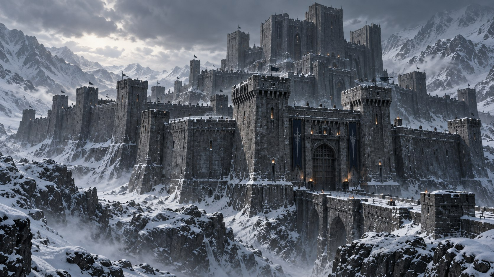
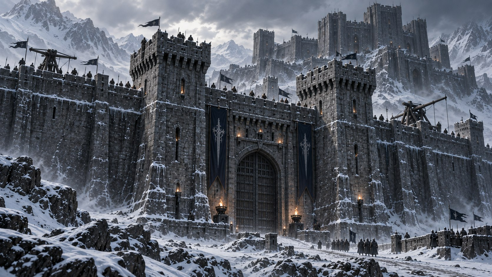
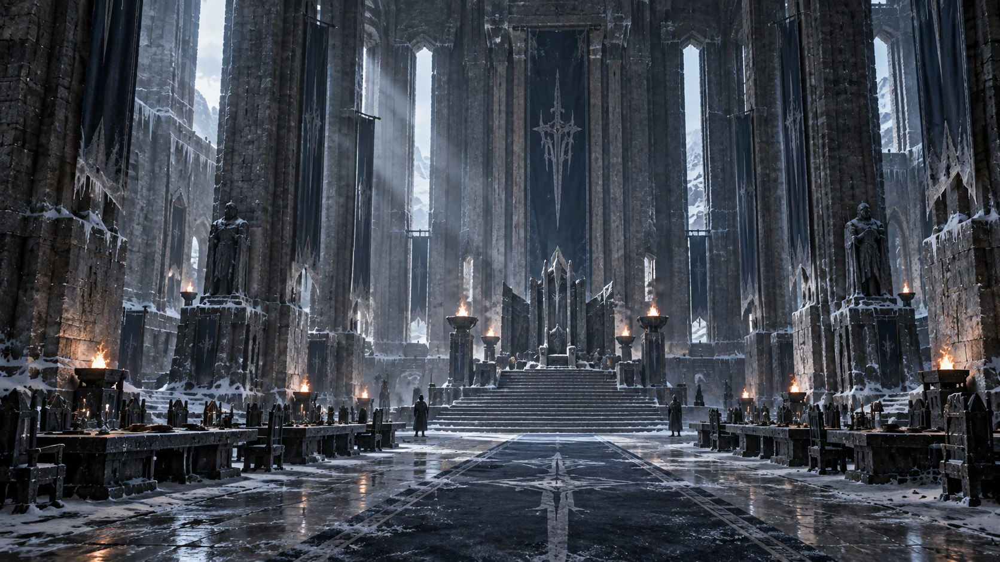

Главные врата
Основной защищённый вход во внутреннюю часть крепости.

Локация / Майзервин
Монументальная цитадель королевства Майзервин.
Цитадель МайзервинаАрхивная запись · Том I
I / Среди гор
Крепость Холода — отдельная крупная укреплённая локация королевства Майзервин. В отличие от Майзергарда, который является полноценным городом, здесь всё подчинено военной и оборонительной задаче.
Массивные стены, башни, врата и внутренние укрепления позволяют размещать значительные силы и готовиться к непосредственной обороне.
Крепость возвышается среди заснеженных гор Майзервина. Тёмный камень её стен соседствует со снегом и льдом окружающих земель.
Майзергард — город.
Крепость Холода — цитадель.
II / Внешний рубеж
Крепость Холода располагает оборонительной инфраструктурой. Массивные стены и башни образуют укреплённые участки, а главные врата защищают путь внутрь комплекса.
При угрозе стены и башни подготавливаются к обороне, часовые занимают позиции, а имеющиеся оборонительные орудия могут быть приведены в готовность.

В крепости находились оборонительные орудия. Их точная конструкция в открытом досье не установлена.
III / За стенами
За внешними укреплениями Крепость Холода остаётся столь же суровой, как и снаружи. Основой внутренних помещений служит камень.
Холод сохраняет характер всей цитадели: каменные поверхности соседствуют со льдом и инеем. Внутри существуют залы, помещения для размещения сил и камеры. Полный план крепости в открытом досье не приводится.
IV / Внутреннее пространство
Одним из наиболее заметных пространств Крепости Холода является тронный зал.
Массивный камень, холод и ледяные элементы формируют суровую обстановку, лишённую привычной дворцовой лёгкости. В зале присутствуют столы и голубые декоративные элементы, а центральное место занимает трон.
Это пространство связано с королевской властью Майзервина и подчёркивает её иначе, чем дворцы более тёплых земель.

V / Каменные помещения
В Крепости Холода существуют холодные каменные камеры, отделённые тяжёлыми решётками. В определённых случаях решётки могут дополнительно укрепляться чарами, когда обычной преграды недостаточно.
VI / Назначение
Крепость Холода предназначена не только для пассивной защиты. Её пространство позволяет размещать значительные силы, готовить укрепления к бою и использовать цитадель как военный объект.
В разные периоды внутренние помещения используются находящимися здесь силами для размещения, подготовки и тренировок. При необходимости ресурсы и вооружение крепости могут использоваться и за её пределами.
VII / Подтверждённые элементы
Основной защищённый вход во внутреннюю часть крепости.
Массивные укрепления Крепости Холода.
Часть оборонительной инфраструктуры цитадели.
Одно из ключевых внутренних пространств крепости.
Холодные каменные помещения с решётками, которые могут укрепляться чарами.
Вооружение, используемое для защиты укреплений.